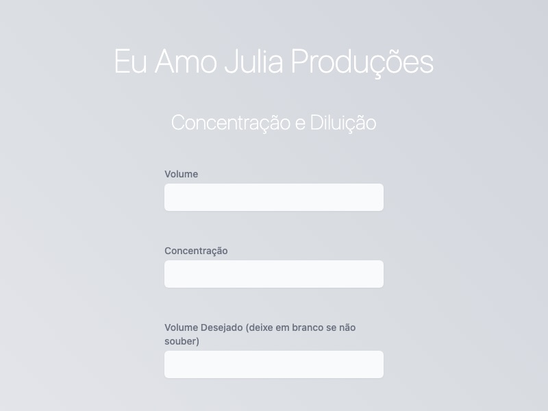
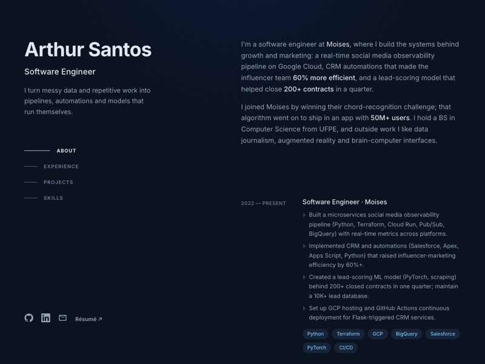
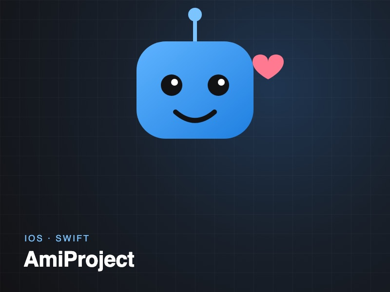
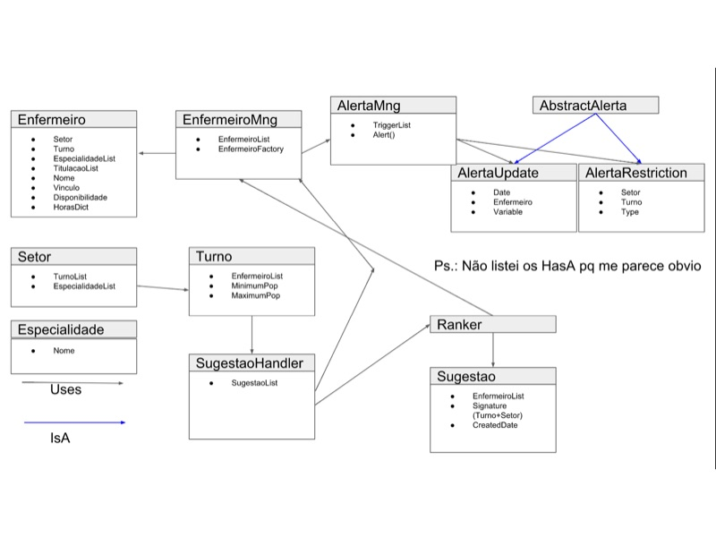

All Projects
| Year | Project | Link |
|---|---|---|
| 2026 |  Ranking Político
Ranks Brazil's senators and federal deputies from official open data and maps them politically by their votes. Ranking Político
Ranks Brazil's senators and federal deputies from official open data and maps them politically by their votes. |
Live site ↗ GitHub ↗ |
| 2025 |  EEG Mental State Classifier
Classifies mental states from EEG signals (98.86% eye-state accuracy) with an interactive dashboard. EEG Mental State Classifier
Classifies mental states from EEG signals (98.86% eye-state accuracy) with an interactive dashboard. |
GitHub ↗ |
| 2023 |  Concentration/Dilution Calculator Simple web page to calculate concentration and dilution. |
GitHub ↗ |
| 2023 |  This Portfolio Hand-coded HTML and CSS, no framework, deployed with GitHub Pages. |
GitHub ↗ |
| 2021 |  Chord.ls
Winning entry of the Moises.ai challenge: chord recognition for every timestamp of an audio file. Chord.ls
Winning entry of the Moises.ai challenge: chord recognition for every timestamp of an audio file. |
GitHub ↗ |
| 2020 |  AR Library
Android prototype that recognizes book covers and overlays book data in AR. AR Library
Android prototype that recognizes book covers and overlays book data in AR. |
GitHub ↗ |
| 2019 |  AmiProject Companion app for a toy designed to be a friend and babysitter for small children. |
GitHub ↗ |
| 2018 |  Nurse-Manager Nurse management system built to practice requirements engineering and unit testing. |
GitHub ↗ |
| 2017 |  E-Turismo
Guided tour of Recife for EPSON Moverio AR glasses, recognizing landmarks through the camera. E-Turismo
Guided tour of Recife for EPSON Moverio AR glasses, recognizing landmarks through the camera. |
GitHub ↗ |